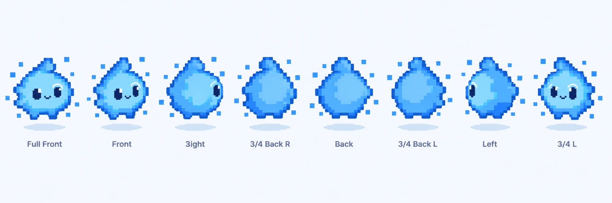

<title>Nibley 3D</title>
<meta name="claude:viewport-fit-sides" content="cover">
<link rel="preconnect" href="https://fonts.googleapis.com">
<link rel="preconnect" href="https://fonts.gstatic.com" crossorigin>
<link rel="stylesheet" href="https://fonts.googleapis.com/css2?family=Inter:wght@400;600;700&display=swap">
<style>
/* Layout: one square stage with Nibley, mood + view chips under it, the brand-board turnaround last for comparison.
   Tokens come from docs/DESIGN.md (Inter, sky blues, deep chips). */
:root {
  --bg: #F7FAFF;
  --stage: #F3F9FE;
  --surface: #FFFFFF;
  --line: #E6EEF8;
  --text: #2B3A4B;
  --muted: #6B7A90;
  --deep: #1E6FEB;
  --ink: #2F8BFF;
  --on-deep: #FFFFFF;
  --shadow: #C9DCF3;
  --font: 'Inter', system-ui, -apple-system, 'Segoe UI', Roboto, sans-serif;
}
@media (prefers-color-scheme: dark) {
  :root:not([data-theme="light"]) {
    --bg: #0E1624; --stage: #121D2E; --surface: #162235; --line: #24344C; --text: #E6EEF8; --muted: #93A3BA;
    --deep: #4DA3FF; --ink: #6CCCFF; --on-deep: #0E1624; --shadow: #060B14; color-scheme: dark;
  }
}
:root[data-theme="dark"] {
  --bg: #0E1624; --stage: #121D2E; --surface: #162235; --line: #24344C; --text: #E6EEF8; --muted: #93A3BA;
  --deep: #4DA3FF; --ink: #6CCCFF; --on-deep: #0E1624; --shadow: #060B14; color-scheme: dark;
}
body {
  background: var(--bg); color: var(--text); font-family: var(--font); font-size: 16px; line-height: 24px;
  padding-left: max(16px, env(safe-area-inset-left, 0px)); padding-right: max(16px, env(safe-area-inset-right, 0px));
  padding-block: 24px 48px;
}
main { max-width: 880px; margin: 0 auto; display: grid; gap: 20px; }
.col { width: min(100%, 640px); margin: 0 auto; display: grid; gap: 12px; }
h1 { font-size: 24px; line-height: 32px; font-weight: 700; margin: 0; text-wrap: balance; }
header p { margin: 4px 0 0; color: var(--muted); }
.stage {
  position: relative; width: 100%; max-width: 100%; aspect-ratio: 1 / 1; background: var(--stage);
  border: 1px solid var(--line); border-radius: 12px; overflow: hidden;
}
canvas { display: block; width: 100%; height: 100%; touch-action: none; cursor: grab; }
canvas:active { cursor: grabbing; }
.hint { position: absolute; left: 12px; bottom: 10px; font-size: 12px; line-height: 16px; color: var(--muted); pointer-events: none; }
.state { position: absolute; right: 12px; top: 12px; font-size: 13px; line-height: 16px; font-weight: 600; color: var(--on-deep);
  background: var(--deep); border-radius: 999px; padding: 6px 12px; pointer-events: none; }
.fail { position: absolute; inset: 0; display: grid; place-items: center; padding: 24px; text-align: center; color: var(--muted); }
.row { display: flex; flex-wrap: wrap; gap: 8px; align-items: center; }
.lab { font-size: 12px; line-height: 16px; font-weight: 600; letter-spacing: .06em; text-transform: uppercase; color: var(--muted); width: 52px; flex: none; }
.chip {
  font: 600 14px/20px var(--font); padding: 6px 12px; border-radius: 999px; border: 1px solid var(--line);
  background: var(--surface); color: var(--text); cursor: pointer;
}
.chip:hover { border-color: var(--ink); }
.chip[aria-pressed="true"] { background: var(--deep); border-color: var(--deep); color: var(--on-deep); }
.chip:focus-visible { outline: 2px solid var(--ink); outline-offset: 2px; }
figure { margin: 0; display: grid; gap: 8px; }
.ref { background: #F4F8FD; border: 1px solid var(--line); border-radius: 12px; overflow: hidden; }
.ref img { display: block; width: 100%; height: auto; aspect-ratio: 2000 / 360; object-fit: cover; object-position: 50% 52%; }
figcaption, .meta { font-size: 12px; line-height: 16px; color: var(--muted); }
</style>

<main>
  <header class="col">
    <h1>Nibley 3D</h1>
    <p>The pixel spark from the brand board, rebuilt as a smooth 3D character. Drag to turn Nibley around, pick a mood or a view.</p>
  </header>

  <section class="col" aria-label="3D viewer">
    <div class="stage" id="stage">
      <canvas id="c" aria-label="3D model of Nibley, a small blue spark with a flame tuft, big navy eyes and a tiny smile"></canvas>
      <div class="state" id="stateTag">Happy</div>
      <div class="hint">Drag to turn · scroll or pinch to zoom</div>
    </div>
    <div class="row" role="group" aria-label="Mood">
      <span class="lab">Mood</span>
      <button class="chip" id="m-happy" data-mood="happy" aria-pressed="true">Happy</button>
      <button class="chip" id="m-listening" data-mood="listening" aria-pressed="false">Listening</button>
      <button class="chip" id="m-thinking" data-mood="thinking" aria-pressed="false">Thinking</button>
      <button class="chip" id="m-speaking" data-mood="speaking" aria-pressed="false">Speaking</button>
      <button class="chip" id="m-confused" data-mood="confused" aria-pressed="false">Confused</button>
      <button class="chip" id="m-excited" data-mood="excited" aria-pressed="false">Excited</button>
      <button class="chip" id="m-error" data-mood="error" aria-pressed="false">Error</button>
    </div>
    <div class="row" role="group" aria-label="View">
      <span class="lab">View</span>
      <button class="chip" id="v-front" data-yaw="0" aria-pressed="true">Front</button>
      <button class="chip" id="v-q34" data-yaw="45" aria-pressed="false">3/4</button>
      <button class="chip" id="v-side" data-yaw="90" aria-pressed="false">Side</button>
      <button class="chip" id="v-back" data-yaw="180" aria-pressed="false">Back</button>
      <button class="chip" id="v-spin" data-yaw="spin" aria-pressed="false">Spin</button>
    </div>
    <p class="meta" id="meta">Building the model…</p>
  </section>

  <figure class="col" style="width:min(100%,880px)">
    <div class="ref"></div>
    <figcaption>Reference: the brand board turnaround. Use the View buttons to line the 3D model up with any of these.</figcaption>
  </figure>
</main>

<script type="importmap">
{ "imports": {
  "three": "https://cdn.jsdelivr.net/npm/three@0.170.0/build/three.module.js",
  "three/addons/": "https://cdn.jsdelivr.net/npm/three@0.170.0/examples/jsm/"
} }
</script>
<script type="module">
import * as THREE from 'three';
import { OrbitControls } from 'three/addons/controls/OrbitControls.js';
import { RoomEnvironment } from 'three/addons/environments/RoomEnvironment.js';
import { RoundedBoxGeometry } from 'three/addons/geometries/RoundedBoxGeometry.js';
import { mergeVertices } from 'three/addons/utils/BufferGeometryUtils.js';

const stage = document.getElementById('stage');
const canvas = document.getElementById('c');
const meta = document.getElementById('meta');
const stateTag = document.getElementById('stateTag');
const reduced = matchMedia('(prefers-reduced-motion: reduce)').matches;

// ---------- palette (sampled from the brand board) ----------
const COL = {
  top: '#8BD9FC', low: '#2B88FA', rim: '#0E5BD0', eye: '#0C2561', mouth: '#062463', glint: '#F4FAFF',
  arc: '#E4FBFF', bit: '#318EFC', bitLight: '#6CCCFF', error: '#FF8B7A', eyeLow: '#1C3F92', blush: '#FF8B7A', star: '#BDE9FF', starGlow: '#8BD9FC',
};

// ---------- shape: smooth signed-distance blend (units: body half-width = 1, y up, face looks along +z) ----------
// Body: a puffy rounded-square core, a crown that tapers into a flame tuft curling right, a shoulder step, two toe
// nubs. Hands are separate meshes so they can move. Units: body half-width ≈ 0.9, y up, face looks along +z.
const SHAPE = {
  core: [0, -0.04, 0, 0.88, 0.7, 0.64], coreBox: [0, -0.04, 0, 0.86, 0.68, 0.62, 0.46],
  crown: [0.05, 0.34, -0.02, 0.6, 0.5, 0.5],
  tuft: [[0.06, 0.5, 0.0], [0.15, 0.82, -0.02], [0.28, 0.99, -0.03]], tuftR: [0.31, 0.22, 0.155],
  shoulder: [0.36, 0.66, 0.0, 0.1],
  feet: [[-0.29, -0.74, 0.1], [0.29, -0.74, 0.1]], footR: [0.18, 0.12, 0.18],
};
const BODY_CY = -0.04;
// Baby-face proportions: big eyes set low and wide, tiny mouth between them.
const FACE = { cx: 0.06, eyeY: -0.07, eyeDX: 0.33, eyeR: [0.145, 0.19, 0.075], mouthY: -0.18, mouthW: 0.09, mouthDip: 0.06 };

const smin = (a, b, k) => { const h = Math.max(k - Math.abs(a - b), 0) / k; return Math.min(a, b) - h * h * k * 0.25; };
const smax = (a, b, k) => -smin(-a, -b, k);
const smooth = (e0, e1, x) => { const t = Math.min(1, Math.max(0, (x - e0) / (e1 - e0))); return t * t * (3 - 2 * t); };
function sdEllipsoid(px, py, pz, cx, cy, cz, rx, ry, rz) {
  const x = (px - cx) / rx, y = (py - cy) / ry, z = (pz - cz) / rz;
  const k0 = Math.sqrt(x * x + y * y + z * z), k1 = Math.sqrt((x / rx) ** 2 + (y / ry) ** 2 + (z / rz) ** 2);
  return k1 === 0 ? -Math.min(rx, ry, rz) : k0 * (k0 - 1) / k1;
}
const sdSphere = (px, py, pz, [cx, cy, cz, r]) => Math.hypot(px - cx, py - cy, pz - cz) - r;
function sdRoundBox(px, py, pz, cx, cy, cz, bx, by, bz, r, rot = 0) {
  let x = px - cx, y = py - cy;
  const z = pz - cz;
  if (rot) { const c = Math.cos(rot), s = Math.sin(rot); [x, y] = [c * x + s * y, -s * x + c * y]; }
  const qx = Math.abs(x) - bx + r, qy = Math.abs(y) - by + r, qz = Math.abs(z) - bz + r;
  return Math.hypot(Math.max(qx, 0), Math.max(qy, 0), Math.max(qz, 0)) + Math.min(Math.max(qx, qy, qz), 0) - r;
}
function sdRoundCone(px, py, pz, a, b, r1, r2) {
  const bax = b[0] - a[0], bay = b[1] - a[1], baz = b[2] - a[2];
  const l2 = bax * bax + bay * bay + baz * baz, rr = r1 - r2, a2 = l2 - rr * rr, il2 = 1 / l2;
  const pax = px - a[0], pay = py - a[1], paz = pz - a[2];
  const y = pax * bax + pay * bay + paz * baz, z = y - l2;
  const qx = pax * l2 - bax * y, qy = pay * l2 - bay * y, qz = paz * l2 - baz * y;
  const x2 = qx * qx + qy * qy + qz * qz, y2 = y * y * l2, z2 = z * z * l2, k = Math.sign(rr) * rr * rr * x2;
  if (Math.sign(z) * a2 * z2 > k) return Math.sqrt(x2 + z2) * il2 - r2;
  if (Math.sign(y) * a2 * y2 < k) return Math.sqrt(x2 + y2) * il2 - r1;
  return (Math.sqrt(x2 * a2 * il2) + y * rr) * il2 - r1;
}
function sdf(x, y, z) {
  const S = SHAPE;
  let d = 0.6 * sdEllipsoid(x, y, z, ...S.core) + 0.4 * sdRoundBox(x, y, z, ...S.coreBox);
  d = smin(d, sdEllipsoid(x, y, z, ...S.crown), 0.25);
  d = smin(d, sdRoundCone(x, y, z, S.tuft[0], S.tuft[1], S.tuftR[0], S.tuftR[1]), 0.14);
  d = smin(d, sdRoundCone(x, y, z, S.tuft[1], S.tuft[2], S.tuftR[1], S.tuftR[2]), 0.05);
  d = smin(d, sdSphere(x, y, z, S.shoulder), 0.07);
  for (const f of S.feet) d = smin(d, sdEllipsoid(x, y, z, ...f, ...S.footR), 0.08);
  return d;
}
// Distance from (0, cy, 0) to the body surface along a direction.
function surfaceRadius(dx, dy, dz, cy = 0) {
  let r = 1.35, prev = r;
  while (r > 0 && sdf(dx * r, cy + dy * r, dz * r) > 0) { prev = r; r -= 0.012; }
  let lo = r, hi = prev;
  for (let k = 0; k < 10; k++) { const m = (lo + hi) / 2; if (sdf(dx * m, cy + dy * m, dz * m) > 0) hi = m; else lo = m; }
  return (lo + hi) / 2;
}
function grad(x, y, z, e = 0.002) {
  const nx = sdf(x + e, y, z) - sdf(x - e, y, z), ny = sdf(x, y + e, z) - sdf(x, y - e, z), nz = sdf(x, y, z + e) - sdf(x, y, z - e);
  const l = Math.hypot(nx, ny, nz) || 1;
  return new THREE.Vector3(nx / l, ny / l, nz / l);
}
// First surface hit looking from the front (+z), for placing the face.
function surfaceZ(x, y) {
  let z = 1.2, prev = z;
  while (z > -1.2 && sdf(x, y, z) > 0) { prev = z; z -= 0.004; }
  let lo = z, hi = prev;
  for (let i = 0; i < 16; i++) { const m = (lo + hi) / 2; if (sdf(x, y, m) > 0) hi = m; else lo = m; }
  return (lo + hi) / 2;
}
function surfaceFrame(x, y) {
  const p = new THREE.Vector3(x, y, surfaceZ(x, y)), n = grad(p.x, p.y, p.z);
  const xa = new THREE.Vector3().crossVectors(new THREE.Vector3(0, 1, 0), n).normalize();
  const ya = new THREE.Vector3().crossVectors(n, xa);
  return { p, n, q: new THREE.Quaternion().setFromRotationMatrix(new THREE.Matrix4().makeBasis(xa, ya, n)) };
}
function anchored(x, y, lift) {
  const f = surfaceFrame(x, y), g = new THREE.Group();
  g.position.copy(f.p).addScaledVector(f.n, lift);
  g.quaternion.copy(f.q);
  return g;
}

// Body: an icosphere pushed out to the blended surface, normals from the distance field.
function bodyGeometry(detail) {
  let g = new THREE.IcosahedronGeometry(1, detail);
  g.deleteAttribute('normal'); g.deleteAttribute('uv');
  g = mergeVertices(g);
  const pos = g.attributes.position, n = pos.count;
  const normals = new Float32Array(n * 3), colors = new Float32Array(n * 3);
  const cTop = new THREE.Color(COL.top), cLow = new THREE.Color(COL.low), c = new THREE.Color();
  for (let i = 0; i < n; i++) {
    let dx = pos.getX(i), dy = pos.getY(i), dz = pos.getZ(i);
    const L = Math.hypot(dx, dy, dz); dx /= L; dy /= L; dz /= L;
    let r = 1.35, prev = r;
    while (r > 0 && sdf(dx * r, dy * r, dz * r) > 0) { prev = r; r -= 0.012; }
    let lo = r, hi = prev;
    for (let k = 0; k < 14; k++) { const m = (lo + hi) / 2; if (sdf(dx * m, dy * m, dz * m) > 0) hi = m; else lo = m; }
    const R = (lo + hi) / 2, x = dx * R, y = dy * R, z = dz * R;
    pos.setXYZ(i, x, y, z);
    const nv = grad(x, y, z);
    normals.set([nv.x, nv.y, nv.z], i * 3);
    c.copy(cLow).lerp(cTop, smooth(-0.75, 0.3, y + 0.45 * nv.z));
    colors.set([c.r, c.g, c.b], i * 3);
  }
  g.setAttribute('normal', new THREE.BufferAttribute(normals, 3));
  g.setAttribute('color', new THREE.BufferAttribute(colors, 3));
  return g;
}

// A tube that follows the body surface (mouth lines, the eye-shine arc).
function surfaceTube(points2d, radius, lift, mat) {
  const pts = points2d.map(([x, y]) => { const f = surfaceFrame(x, y); return f.p.clone().addScaledVector(f.n, lift); });
  const curve = new THREE.CatmullRomCurve3(pts);
  const g = new THREE.Group();
  g.add(new THREE.Mesh(new THREE.TubeGeometry(curve, 48, radius, 12, false), mat));
  for (const p of [pts[0], pts[pts.length - 1]]) {
    const cap = new THREE.Mesh(new THREE.SphereGeometry(radius, 12, 8), mat);
    cap.position.copy(p); g.add(cap);
  }
  return g;
}
const sampleCurve = (n, fn) => Array.from({ length: n }, (_, i) => fn(-1 + (2 * i) / (n - 1)));

// ---------- renderer, scene, lights ----------
let renderer;
try {
  renderer = new THREE.WebGLRenderer({ canvas, antialias: true, alpha: true, preserveDrawingBuffer: true });
} catch (e) {
  stage.insertAdjacentHTML('beforeend', '<div class="fail">This browser can\'t show 3D right now (WebGL is turned off or not supported).</div>');
  meta.textContent = '';
  throw e;
}
renderer.setPixelRatio(Math.min(devicePixelRatio, 2));
renderer.outputColorSpace = THREE.SRGBColorSpace;
renderer.setClearColor(0x000000, 0);

const scene = new THREE.Scene();
const pmrem = new THREE.PMREMGenerator(renderer);
scene.environment = pmrem.fromScene(new RoomEnvironment(), 0.04).texture;
// Light levels tuned so rendered colours land on the brand board's (face #8BD9FC, lower body #2B88FA).
const LOOK = { env: 0.06, hemi: 0.5, key: 0.8, fill: 0.2, back: 0.6, selfLit: 0.6 };
const hemi = new THREE.HemisphereLight(0xffffff, 0x5a8ff5, 1); scene.add(hemi);
const key = new THREE.DirectionalLight(0xffffff, 1); key.position.set(-2.5, 3.5, 5); scene.add(key);
const fill = new THREE.DirectionalLight(0xe4f4ff, 1); fill.position.set(3, 0.5, 3); scene.add(fill);
const back = new THREE.DirectionalLight(0xffffff, 1); back.position.set(0, 3, -5); scene.add(back);
const selfLit = { value: LOOK.selfLit };
function applyLook(o = {}) {
  Object.assign(LOOK, o);
  scene.environmentIntensity = LOOK.env;
  hemi.intensity = LOOK.hemi; key.intensity = LOOK.key; fill.intensity = LOOK.fill; back.intensity = LOOK.back;
  selfLit.value = LOOK.selfLit;
}
applyLook();

const camera = new THREE.PerspectiveCamera(28, 1, 0.1, 50);
const HOME = new THREE.Vector3(0, 0.12, 7.0), TARGET = new THREE.Vector3(0, -0.07, 0);
camera.position.copy(HOME);
const controls = new OrbitControls(camera, canvas);
controls.target.copy(TARGET);
Object.assign(controls, { enablePan: false, enableDamping: true, minDistance: 4.5, maxDistance: 12, minPolarAngle: Math.PI * 0.28, maxPolarAngle: Math.PI * 0.62 });
controls.update();

// ---------- materials ----------
function bodyMaterial() {
  const m = new THREE.MeshPhysicalMaterial({
    vertexColors: true, roughness: 0.4, clearcoat: 0.4, clearcoatRoughness: 0.2,
    envMapIntensity: 1,
  });
  // Brand look: half self-lit so the blues stay true, plus a deep-blue rim like the pixel outline.
  m.onBeforeCompile = (sh) => {
    sh.uniforms.rimColor = { value: new THREE.Color(COL.rim) };
    sh.uniforms.selfLit = selfLit;
    sh.fragmentShader = 'uniform vec3 rimColor;\nuniform float selfLit;\n' + sh.fragmentShader
      .replace('#include <color_fragment>', `#include <color_fragment>
        float nv = clamp(dot(normalize(vNormal), normalize(vViewPosition)), 0.0, 1.0);
        diffuseColor.rgb = mix(diffuseColor.rgb, rimColor, 0.88 * pow(1.0 - nv, 1.7));`)
      .replace('#include <emissivemap_fragment>', `#include <emissivemap_fragment>
        totalEmissiveRadiance += diffuseColor.rgb * selfLit;`);
  };
  return m;
}
// Soft round spot (blush, toy shine): white centre fading to clear.
const softDot = (() => {
  const cv = document.createElement('canvas'); cv.width = cv.height = 128;
  const g = cv.getContext('2d'), r = g.createRadialGradient(64, 64, 0, 64, 64, 64);
  r.addColorStop(0, 'rgba(255,255,255,1)'); r.addColorStop(0.45, 'rgba(255,255,255,.8)'); r.addColorStop(1, 'rgba(255,255,255,0)');
  g.fillStyle = r; g.fillRect(0, 0, 128, 128);
  const t = new THREE.CanvasTexture(cv); t.colorSpace = THREE.SRGBColorSpace;
  return t;
})();
const decal = (color, opacity) => new THREE.MeshBasicMaterial({ color, map: softDot, transparent: true, opacity, depthWrite: false, polygonOffset: true, polygonOffsetFactor: -2 });
const mat = {
  body: bodyMaterial(),
  blush: decal(COL.blush, 0.62),
  shine: decal('#FFFFFF', 0.5),
  star: new THREE.MeshPhysicalMaterial({ color: COL.star, roughness: 0.2, clearcoat: 1, clearcoatRoughness: 0.1, emissive: COL.starGlow, emissiveIntensity: 0.45 }),
  eye: new THREE.MeshPhysicalMaterial({ vertexColors: true, roughness: 0.16, clearcoat: 1, clearcoatRoughness: 0.08, envMapIntensity: 1.1 }),
  mouth: new THREE.MeshStandardMaterial({ color: COL.mouth, roughness: 0.5 }),
  glint: new THREE.MeshBasicMaterial({ color: COL.glint }),
  arc: new THREE.MeshBasicMaterial({ color: COL.arc }),
  bit: new THREE.MeshPhysicalMaterial({ color: COL.bit, roughness: 0.35, clearcoat: 0.5, clearcoatRoughness: 0.2, envMapIntensity: 0.3, emissive: COL.bit, emissiveIntensity: 0.5 }),
  bitLight: new THREE.MeshPhysicalMaterial({ color: COL.bitLight, roughness: 0.35, clearcoat: 0.5, clearcoatRoughness: 0.2, envMapIntensity: 0.3, emissive: COL.bitLight, emissiveIntensity: 0.5 }),
  error: new THREE.MeshStandardMaterial({ color: COL.error, roughness: 0.4, emissive: COL.error, emissiveIntensity: 0.35 }),
};

// ---------- build Nibley ----------
const model = new THREE.Group();     // turns (yaw)
const bobber = new THREE.Group();    // floats, squashes, tilts
model.add(bobber);
scene.add(model);

const t0 = performance.now();
const bodyGeo = bodyGeometry(44);
const body = new THREE.Mesh(bodyGeo, mat.body);
body.name = 'body';
bobber.add(body);

const face = new THREE.Group(); face.name = 'face'; bobber.add(face);
const planeGeo = new THREE.PlaneGeometry(1, 1);
const dotGeo = new THREE.SphereGeometry(1, 20, 12);
const eyeX = [FACE.cx - FACE.eyeDX, FACE.cx + FACE.eyeDX];
const [erx, ery, erz] = FACE.eyeR;
// Eyes: navy, a touch lighter at the bottom so they read as glossy domes.
const eyeGeo = (() => {
  const g = new THREE.SphereGeometry(1, 48, 32), p = g.attributes.position, c = new Float32Array(p.count * 3);
  const top = new THREE.Color(COL.eye), low = new THREE.Color(COL.eyeLow), t = new THREE.Color();
  for (let i = 0; i < p.count; i++) { t.copy(top).lerp(low, smooth(0.1, -0.95, p.getY(i))); c.set([t.r, t.g, t.b], i * 3); }
  g.setAttribute('color', new THREE.BufferAttribute(c, 3));
  return g;
})();
// Places a flat piece on the eye dome at (x, y), facing out of the dome.
function onEye(m, x, y) {
  const z = erz * Math.sqrt(Math.max(0, 1 - (x / erx) ** 2 - (y / ery) ** 2));
  m.position.set(x, y, z + 0.002);
  m.quaternion.setFromUnitVectors(new THREE.Vector3(0, 0, 1), new THREE.Vector3(x / erx ** 2, y / ery ** 2, z / erz ** 2).normalize());
  return m;
}
const eyes = eyeX.map((ex) => {
  const g = anchored(ex, FACE.eyeY, -0.018);
  const ball = new THREE.Mesh(eyeGeo, mat.eye);
  ball.scale.set(erx, ery, erz);
  const glint = onEye(new THREE.Mesh(dotGeo, mat.glint), 0.05, 0.085);
  glint.scale.set(0.046, 0.054, 0.01);
  const glint2 = onEye(new THREE.Mesh(dotGeo, mat.glint), -0.05, -0.09);
  glint2.scale.set(0.021, 0.021, 0.008);
  const open = new THREE.Group(); open.add(ball, glint, glint2);
  const cross = new THREE.Group(); cross.visible = false;
  for (const a of [Math.PI / 4, -Math.PI / 4]) {
    const bar = new THREE.Mesh(new THREE.CapsuleGeometry(0.028, 0.18, 6, 12), mat.mouth);
    bar.rotation.z = a; bar.position.z = 0.03; cross.add(bar);
  }
  g.add(open, cross);
  g.userData = { open, cross, base: g.position.clone() };
  face.add(g);
  return g;
});
// Eye-shine arc over the right eye (brand board detail).
const ex = eyeX[1];
const arc = surfaceTube(sampleCurve(24, (s) => { const a = Math.PI / 2 + s * 1.05; return [ex - 0.02 + 0.23 * Math.cos(a), FACE.eyeY + 0.06 + 0.23 * Math.sin(a)]; }), 0.017, 0.012, mat.arc);
arc.name = 'shine-arc';
face.add(arc);
// Blush cheeks and a vinyl-toy shine spot on the upper left.
for (const side of [-1, 1]) {
  const g = anchored(FACE.cx + side * 0.54, FACE.eyeY - 0.16, 0.008);
  const m = new THREE.Mesh(planeGeo, mat.blush); m.scale.set(0.26, 0.14, 1); m.renderOrder = 2;
  g.add(m); face.add(g);
}
const shine = anchored(-0.36, 0.4, 0.008);
const shineSpot = new THREE.Mesh(planeGeo, mat.shine); shineSpot.scale.set(0.36, 0.2, 1); shineSpot.rotation.z = 0.75; shineSpot.renderOrder = 2;
shine.add(shineSpot); bobber.add(shine);

const mx = FACE.cx, my = FACE.mouthY, mw = FACE.mouthW;
const mouths = {
  smile: surfaceTube(sampleCurve(17, (s) => [mx + s * mw, my - FACE.mouthDip * (1 - s * s)]), 0.018, 0.004, mat.mouth),
  flat: surfaceTube(sampleCurve(9, (s) => [mx + s * 0.05, my - 0.03]), 0.016, 0.004, mat.mouth),
  wavy: surfaceTube(sampleCurve(21, (s) => [mx + s * 0.08, my - 0.03 + 0.018 * Math.sin(s * Math.PI * 2)]), 0.015, 0.004, mat.mouth),
  frown: surfaceTube(sampleCurve(17, (s) => [mx + s * 0.07, my - 0.06 + 0.035 * (1 - s * s)]), 0.016, 0.004, mat.mouth),
};
const oMouth = anchored(mx, my - 0.03, -0.004);
const oShape = new THREE.Mesh(dotGeo, mat.mouth);
oShape.scale.set(0.036, 0.042, 0.014);
oMouth.add(oShape);
const openMouth = anchored(mx, my - 0.035, -0.004);
const openShape = new THREE.Mesh(new THREE.SphereGeometry(1, 32, 16), mat.mouth);
openShape.scale.set(0.075, 0.055, 0.018);
openMouth.add(openShape);
Object.assign(mouths, { o: oMouth, open: openMouth });
for (const m of Object.values(mouths)) { m.visible = false; face.add(m); }

// Little nub hands. They slide along the body side to act out each mood (wave, think, cheer, droop).
const handGeo = (() => {
  const g = new THREE.SphereGeometry(1, 32, 20), p = g.attributes.position, c = new Float32Array(p.count * 3);
  const cTop = new THREE.Color(COL.top), cLow = new THREE.Color(COL.low), t = new THREE.Color();
  for (let i = 0; i < p.count; i++) { t.copy(cLow).lerp(cTop, smooth(-0.75, 0.3, -0.1 + 0.12 * p.getY(i) + 0.45 * p.getZ(i))); c.set([t.r, t.g, t.b], i * 3); }
  g.setAttribute('color', new THREE.BufferAttribute(c, 3));
  return g;
})();
const hands = [-1, 1].map((side) => {
  const mesh = new THREE.Mesh(handGeo, mat.body);
  mesh.scale.set(0.135, 0.105, 0.12);
  mesh.name = side < 0 ? 'hand-left' : 'hand-right';
  bobber.add(mesh);
  return { mesh, side, a: -0.28 };
});
const handDir = new THREE.Vector3();
function placeHand(h) {
  handDir.set(h.side * Math.cos(h.a), Math.sin(h.a), 0.32).normalize();
  const R = surfaceRadius(handDir.x, handDir.y, handDir.z, BODY_CY) + 0.01;
  h.mesh.position.set(handDir.x * R, BODY_CY + handDir.y * R, handDir.z * R);
  h.mesh.rotation.set(0, -h.side * 0.35, h.side * (h.a - 0.35));
}

// Signature spark: a small twinkling star beside the tuft ("small spark, big explanations").
const starGeo = (() => {
  const sh = new THREE.Shape(), k = 0.14;
  sh.moveTo(0, 1); sh.quadraticCurveTo(k, k, 1, 0); sh.quadraticCurveTo(k, -k, 0, -1); sh.quadraticCurveTo(-k, -k, -1, 0); sh.quadraticCurveTo(-k, k, 0, 1);
  const g = new THREE.ExtrudeGeometry(sh, { depth: 0.16, bevelEnabled: true, bevelThickness: 0.1, bevelSize: 0.07, bevelSegments: 3, curveSegments: 12 });
  g.center();
  return g;
})();
const star = new THREE.Mesh(starGeo, mat.star);
star.name = 'spark';
star.position.set(0.62, 1.12, 0.08);
star.scale.setScalar(0.1);
bobber.add(star);

// Floating pixel bits: crisp little cubes, a nod to the pixel-art original.
const BITS = [
  [-0.74, 0.92, 0.22, 0.15, 0], [1.0, 0.9, -0.12, 0.13, 0], [-1.06, 0.58, -0.22, 0.14, 1], [1.04, 0.46, 0.3, 0.11, 0],
  [-1.32, -0.22, 0.12, 0.13, 0], [1.2, -0.42, 0.2, 0.11, 1], [-0.86, -0.82, 0.32, 0.11, 0], [0.84, -0.8, 0.26, 0.13, 0],
  [-0.22, 1.3, -0.35, 0.08, 1],
];
const bitGeo = new RoundedBoxGeometry(1, 1, 1, 2, 0.1);
const bits = BITS.map(([x, y, z, s, light], i) => {
  const b = new THREE.Mesh(bitGeo, light ? mat.bitLight : mat.bit);
  b.scale.setScalar(s * 1.3); b.position.set(x, y, z);
  b.rotation.set(0.3 * i, 0.5 * i, 0.1 * i);
  b.userData = { base: b.position.clone(), phase: i * 1.7, rot0: b.rotation.clone() };
  model.add(b);
  return b;
});
const errorMark = new THREE.Group();
for (const a of [Math.PI / 4, -Math.PI / 4]) {
  const bar = new THREE.Mesh(new THREE.CapsuleGeometry(0.035, 0.2, 6, 12), mat.error);
  bar.rotation.z = a; errorMark.add(bar);
}
errorMark.position.set(0.95, 1.12, 0.1); errorMark.visible = false; model.add(errorMark);

// Soft floor shadow (a billboard so it reads from any side).
const shadowTex = (() => {
  const cv = document.createElement('canvas'); cv.width = cv.height = 128;
  const g = cv.getContext('2d'), r = g.createRadialGradient(64, 64, 0, 64, 64, 64);
  r.addColorStop(0, 'rgba(255,255,255,1)'); r.addColorStop(0.55, 'rgba(255,255,255,.75)'); r.addColorStop(1, 'rgba(255,255,255,0)');
  g.fillStyle = r; g.fillRect(0, 0, 128, 128);
  return new THREE.CanvasTexture(cv);
})();
const shadow = new THREE.Sprite(new THREE.SpriteMaterial({ map: shadowTex, transparent: true, depthWrite: false }));
shadow.position.set(0, -1.24, 0); shadow.scale.set(1.5, 0.2, 1);
scene.add(shadow);
function themeShadow() {
  const css = getComputedStyle(document.documentElement).getPropertyValue('--shadow').trim() || '#C9DCF3';
  shadow.material.color.set(css);
  const t = document.documentElement.dataset.theme;
  shadowBase = t === 'dark' || (t !== 'light' && matchMedia('(prefers-color-scheme: dark)').matches) ? 0.7 : 1;
}
let shadowBase = 1;
themeShadow();
matchMedia('(prefers-color-scheme: dark)').addEventListener('change', themeShadow);
new MutationObserver(themeShadow).observe(document.documentElement, { attributes: true, attributeFilter: ['data-theme'] });

// ---------- moods ----------
// hands: angle of each hand along the body side (radians, 0 = level, + = up), [left, right].
const MOODS = {
  happy:     { label: 'Happy',     mouth: 'smile', tilt: 0,     lean: 0,     look: [0, 0],        eyeScale: 1,    bob: 1,   hands: [-0.28, -0.28] },
  listening: { label: 'Listening', mouth: 'o',     tilt: 0.06,  lean: 0.07,  look: [0, 0],        eyeScale: 1.08, bob: 0.6, hands: [0.25, -0.1] },
  thinking:  { label: 'Thinking',  mouth: 'flat',  tilt: -0.09, lean: 0,     look: [0.03, 0.045], eyeScale: 1,    bob: 0.5, hands: [-0.2, 0.55] },
  speaking:  { label: 'Speaking',  mouth: 'open',  tilt: 0,     lean: 0.03,  look: [0, 0],        eyeScale: 1,    bob: 1,   hands: [0.05, 0.05], gesture: 0.3 },
  confused:  { label: 'Confused',  mouth: 'wavy',  tilt: 0.14,  lean: 0,     look: [-0.02, 0.01], eyeScale: 0.94, bob: 0.4, hands: [0.8, -0.2] },
  excited:   { label: 'Excited',   mouth: 'open',  tilt: 0,     lean: 0,     look: [0, 0.01],     eyeScale: 1.1,  bob: 2.4, hands: [0.95, 0.95], gesture: 0.25 },
  error:     { label: 'Error',     mouth: 'frown', tilt: 0.06,  lean: -0.04, look: [0, 0],        eyeScale: 1,    bob: 0.2, hands: [-0.6, -0.6], xEyes: true },
};
let mood = 'happy';
const live = { tilt: 0, lean: 0, lookX: 0, lookY: 0, eyeScale: 1, yaw: 0 };
let yawTarget = 0, spinning = false;
function setMood(name) {
  if (!MOODS[name]) return;
  mood = name;
  const M = MOODS[name];
  for (const [k, m] of Object.entries(mouths)) m.visible = k === M.mouth;
  for (const e of eyes) { e.userData.open.visible = !M.xEyes; e.userData.cross.visible = !!M.xEyes; }
  errorMark.visible = !!M.xEyes;
  star.visible = !M.xEyes;
  stateTag.textContent = M.label;
  document.querySelectorAll('[data-mood]').forEach((b) => b.setAttribute('aria-pressed', String(b.dataset.mood === name)));
}
setMood('happy');

// ---------- animation ----------
let blinkAt = 2.5, glanceAt = 1.5, glance = [0, 0], frozen = null;
// Loop mode (mood sprite loops for the app, render.js): every periodic motion snaps to a whole number of cycles per loop.
let loopT = 0;
const w = (f) => (loopT ? Math.max(1, Math.round((f * loopT) / (2 * Math.PI))) * ((2 * Math.PI) / loopT) : f);
function update(t, dt, snap = false) {
  const M = MOODS[mood], k = snap ? 1 : 1 - Math.exp(-dt * 8);
  const still = reduced || snap;
  const idle = mood === 'happy' || mood === 'listening';
  if (still || !idle || loopT) glance = [0, 0];
  else if (t > glanceAt) { glance = [(Math.random() - 0.5) * 0.05, (Math.random() - 0.5) * 0.03]; glanceAt = t + 1.8 + Math.random() * 2.4; }
  live.tilt += (M.tilt - live.tilt) * k;
  live.lean += (M.lean - live.lean) * k;
  live.lookX += (M.look[0] + glance[0] - live.lookX) * k;
  live.lookY += (M.look[1] + glance[1] - live.lookY) * k;
  live.eyeScale += (M.eyeScale - live.eyeScale) * k;
  if (spinning && !snap) yawTarget += dt * 0.9;
  const dy = yawTarget - live.yaw;
  live.yaw += snap ? dy : dy * (1 - Math.exp(-dt * 5));
  model.rotation.y = live.yaw;

  // Float, plus a little hop now and then when idle (squash on take-off and landing).
  const bobAmp = still ? 0 : 0.045 * M.bob;
  const phase = t * w(mood === 'excited' ? 5.2 : 2.4);
  let bob = mood === 'excited' ? Math.abs(Math.sin(phase)) * bobAmp : Math.sin(phase) * bobAmp;
  let stretch = still ? 0 : Math.sin(t * w(2.4) + 1) * 0.012;
  const hp = (t % 6.4) - 5.7;
  if (!still && !loopT && mood === 'happy' && hp > 0 && hp < 0.5) {
    const p = hp / 0.5;
    bob += 0.16 * Math.sin(Math.PI * p);
    stretch += p < 0.12 || p > 0.88 ? -0.05 : 0.05 * Math.sin(Math.PI * p);
  }
  bobber.position.y = bob;
  bobber.scale.set(1 - stretch * 0.5, 1 + stretch, 1 - stretch * 0.5);
  bobber.rotation.z = live.tilt;
  bobber.rotation.x = live.lean;
  shadow.scale.set(1.5 * (1 - bob * 1.6), 0.2 * (1 - bob * 1.6), 1);
  shadow.material.opacity = shadowBase * (1 - bob * 2);

  let blink = 1;
  if (!still && !M.xEyes && loopT) {
    const lt = t % loopT, b0 = loopT * 0.6;
    if (lt > b0 && lt < b0 + 0.16) blink = 0.12 + 0.88 * Math.abs((lt - b0) / 0.08 - 1);
  } else if (!still && !M.xEyes) {
    if (t > blinkAt + 0.16) blinkAt = t + 2.8 + Math.random() * 2.6;
    if (t > blinkAt) blink = 0.12 + 0.88 * Math.abs((t - blinkAt) / 0.08 - 1);
  }
  eyes.forEach((e) => {
    e.position.copy(e.userData.base);
    e.translateX(live.lookX); e.translateY(live.lookY);
    e.scale.set(live.eyeScale, live.eyeScale * Math.min(1, blink), live.eyeScale);
  });
  if (M.mouth === 'open') {
    const talk = still ? 0.8 : mood === 'excited' ? 1.05 : 0.45 + 0.55 * Math.abs(Math.sin(t * w(9.3)) * Math.sin(t * w(3.1) + 0.7));
    const big = mood === 'excited' ? 1.35 : 1;
    openShape.scale.set(0.075 * big, 0.055 * big * Math.max(0.25, talk), 0.018);
  }

  // Hands: mood pose + gentle sway; gestures while speaking; a hello-wave every ~9 s when idle.
  const waving = !still && !loopT && mood === 'happy' && t % 9 > 3 && t % 9 < 4.4;
  hands.forEach((h, i) => {
    let a = M.hands[i];
    if (!still) {
      a += Math.sin(t * w(1.4) + i * 1.9) * 0.05;
      if (M.gesture) a += Math.sin(t * w(mood === 'excited' ? 12 : 5.5) + i * Math.PI) * M.gesture;
      if (mood === 'thinking' && i === 1) a += Math.sin(t * w(8)) * 0.04;
      if (waving && i === 1) a = 0.95 + Math.sin(t * w(13)) * 0.22;
    }
    h.a += (a - h.a) * (snap ? 1 : 1 - Math.exp(-dt * 12));
    placeHand(h);
  });

  // Spark star: always faces the viewer, twinkles with a quick flash every few seconds.
  const fl = loopT ? t % loopT : t % 4.2;
  const flash = still ? 0 : fl < 0.3 ? 0.3 * Math.sin((fl / 0.3) * Math.PI) : 0;
  star.scale.setScalar(0.12 * (still ? 1 : 0.9 + 0.1 * Math.sin(t * w(3.2)) + flash));
  star.lookAt(camera.position);
  star.rotateZ(0.2 + (still ? 0 : Math.sin(t * w(0.9)) * 0.25));

  bits.forEach((b, i) => {
    const u = b.userData, amp = still ? 0 : mood === 'excited' ? 0.1 : 0.05;
    b.position.copy(u.base);
    b.position.y += Math.sin(t * w(1.6) + u.phase) * amp;
    if (mood === 'thinking' && !still) b.position.applyAxisAngle(new THREE.Vector3(0, 1, 0), Math.sin(t * w(0.6) + i) * 0.08);
    if (loopT && !still) { const q = (Math.PI / 2) * (t / loopT); b.rotation.set(u.rot0.x + q, u.rot0.y + q * (mood === 'excited' ? 2 : 1), u.rot0.z); } // a cube looks the same after 90°, so this loops
    else if (!still) { b.rotation.x += dt * 0.35; b.rotation.y += dt * (mood === 'excited' ? 1.4 : 0.5); }
  });
  if (errorMark.visible && !still) errorMark.rotation.z = Math.sin(t * w(3)) * 0.15;
}

function resize() {
  const w = stage.clientWidth, h = stage.clientHeight;
  renderer.setSize(w, h, false);
  camera.aspect = w / h;
  camera.updateProjectionMatrix();
}
new ResizeObserver(resize).observe(stage);
resize();

const clock = new THREE.Clock();
renderer.setAnimationLoop(() => {
  if (frozen) return;
  const dt = Math.min(clock.getDelta(), 0.05);
  update(clock.elapsedTime, dt);
  controls.update();
  renderer.render(scene, camera);
});

// ---------- controls ----------
document.querySelectorAll('[data-mood]').forEach((b) => b.addEventListener('click', () => setMood(b.dataset.mood)));
document.querySelectorAll('[data-yaw]').forEach((b) => b.addEventListener('click', () => {
  const v = b.dataset.yaw;
  spinning = v === 'spin' ? !spinning : false;
  if (v !== 'spin') {
    const want = THREE.MathUtils.degToRad(Number(v));
    const turns = Math.round((live.yaw - want) / (Math.PI * 2));
    yawTarget = want + turns * Math.PI * 2;
    camera.position.copy(HOME); controls.target.copy(TARGET);
  }
  document.querySelectorAll('[data-yaw]').forEach((o) => o.setAttribute('aria-pressed', String(v === 'spin' ? o === b && spinning : o === b)));
}));

const tris = bodyGeo.index.count / 3;
meta.textContent = `Body: ${Math.round(tris / 1000)}k triangles from 8 blended shapes (plus hands, face and spark), built in ${Math.round(performance.now() - t0)} ms. Colours sampled from the brand board.`;

// ---------- hooks for design/mascot-3d/render.js (turnaround renders + GLB export) ----------
window.nibley = {
  ready: true,
  debug: { scene, mat, renderer, camera, body, bodyGeo, applyLook, LOOK },
  // Colour at a point on the face (front-view coords), for checking against the brand board.
  probe(points) {
    update(0.7, 0, true);
    renderer.render(scene, camera);
    const gl = renderer.getContext(), w = gl.drawingBufferWidth, h = gl.drawingBufferHeight, px = new Uint8Array(4);
    return points.map(([x, y]) => {
      const v = new THREE.Vector3(x, y, surfaceZ(x, y) + 0.01).applyMatrix4(bobber.matrixWorld).project(camera);
      gl.readPixels(Math.round((v.x * 0.5 + 0.5) * w), Math.round((v.y * 0.5 + 0.5) * h), 1, 1, gl.RGBA, gl.UNSIGNED_BYTE, px);
      return '#' + [...px.slice(0, 3)].map((c) => c.toString(16).padStart(2, '0')).join('').toUpperCase();
    });
  },
  snapshot({ yaw = 0, state = 'happy', t = 0.7, size = 512 } = {}) {
    frozen = true;
    setMood(state);
    spinning = false; yawTarget = THREE.MathUtils.degToRad(yaw); live.yaw = yawTarget;
    camera.position.copy(HOME); controls.target.copy(TARGET); controls.update();
    const pr = renderer.getPixelRatio();
    renderer.setPixelRatio(1); renderer.setSize(size, size, false);
    camera.aspect = 1; camera.updateProjectionMatrix();
    update(t, 0, true);
    renderer.render(scene, camera);
    const url = renderer.domElement.toDataURL('image/png');
    renderer.setPixelRatio(pr); resize();
    frozen = null;
    return url;
  },
  // Frames of one seamless loop for a mood: warm up a few loops so smoothing settles, then capture one.
  loopFrames({ state = 'happy', frames = 30, T = 2.5, size = 128, dist = 6.0, warm = 3 } = {}) {
    frozen = true;
    setMood(state); spinning = false; yawTarget = 0; live.yaw = 0; loopT = T;
    camera.position.set(0, 0.18, dist); controls.target.set(0, 0.08, 0); controls.update();
    const pr = renderer.getPixelRatio();
    renderer.setPixelRatio(1); renderer.setSize(size, size, false); camera.aspect = 1; camera.updateProjectionMatrix();
    const dt = T / frames, out = [];
    for (let i = 0; i < warm * frames; i++) update(i * dt, dt, false);
    for (let i = 0; i < frames; i++) {
      update((warm * frames + i) * dt, dt, false);
      renderer.render(scene, camera);
      out.push(renderer.domElement.toDataURL('image/png'));
    }
    loopT = 0; camera.position.copy(HOME); renderer.setPixelRatio(pr); resize(); frozen = null;
    return out;
  },
  async glb() {
    const { GLTFExporter } = await import('three/addons/exporters/GLTFExporter.js');
    setMood('happy'); update(0, 0, true);
    for (const [k, m] of Object.entries(mouths)) m.visible = k === 'smile';
    const buf = await new GLTFExporter().parseAsync(model, { binary: true, onlyVisible: true });
    let s = ''; const bytes = new Uint8Array(buf);
    for (let i = 0; i < bytes.length; i += 0x8000) s += String.fromCharCode(...bytes.subarray(i, i + 0x8000));
    return btoa(s);
  },
};
</script>
